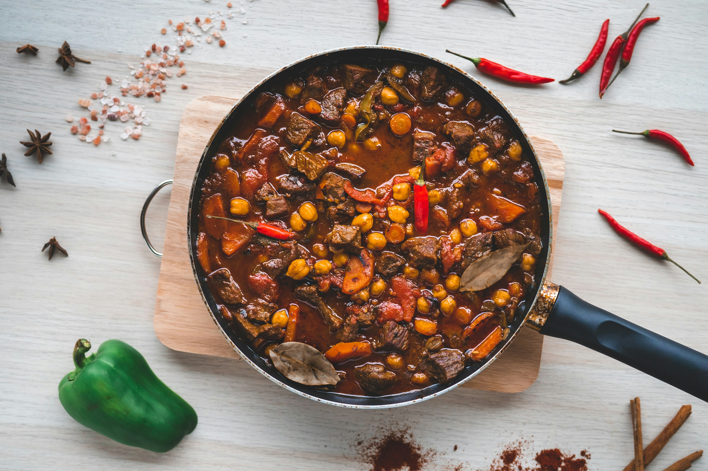

Home
Feuerbohnentopf

Description
The Feuerbohnentopf (fire bean stew) is a simple and flavorful dish that comes together quickly in a single pot.
This hearty stew pairs wonderfully with fresh bread, but also goes great with rice or pasta.
Ingredients
- 3 tablespoons olive oil
- 500g mixed ground meat (beef and pork)
- 3 large onions
- 3 bell peppers
- 3 tablespoons tomato paste
- 500ml vegetable broth
- 1 can kidney beans
- 1 can corn
- 125ml chili sauce
- Salt (to taste)
- Freshly ground black pepper (to taste)
Steps
- Peel the onions and cut them into small cubes.
- Cut the bell peppers in half, remove the seeds, wash them, and slice into strips.
- Heat the olive oil in a large pot.
- Add the ground meat and brown it thoroughly.
- Add the onion cubes and bell pepper strips. Simmer for about 10 minutes, stirring occasionally.
- Stir in the tomato paste, then pour in the vegetable broth.
- Bring to a boil and let cook for another 10 minutes.
- While the stew is cooking, drain the beans and corn.
- After 10 minutes, add the beans, corn, and chili sauce. Bring the soup to a boil once more.
- Season with salt and freshly ground black pepper to taste.
- Enjoy!